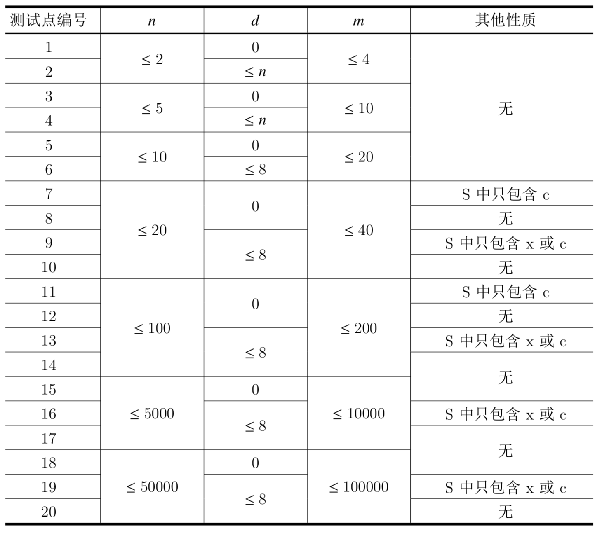

狂野飙车是小 L 最喜欢的游戏。与其他业余玩家不同的是，小L在玩游戏之余，还精于研究游戏的设计，因此他有着与众不同的游戏策略。
小 L 计划进行 $n$ 场游戏，每场游戏使用一张地图，小 L 会选择一辆车在该地图上完成游戏。
小 L 的赛车有三辆，分别用大写字母 A、B、C 表示。地图一共有四种，分别用小写字母 $x,a,b,c$ 表示。其中，赛车 A 不适合在地图 $a$ 上使用，赛车 B 不适合在地图 $b$ 上使用，赛车 C 不适合在地图 $c$ 上使用，而地图 $x$ 则适合所有赛车参加。适合所有赛车参加的地图并不多见，最多只会有 $d$ 张。
$n$ 场游戏的地图可以用一个小写字母组成的字符串描述。例如：$S=xaabxcbc$ 表示小 L 计划进行 $8$ 场游戏，其中第 $1$ 场和第 $5$ 场的地图类型是 $x$，适合所有赛车，第 $2$ 场和第 $3$ 场的地图是 $a$，不适合赛车 A，第 $4$ 场和第 $7$ 场的地图是 $b$，不适合赛车 B，第 $6$ 场和第 $8$ 场的地图是$c$，不适合赛车 C。
小 L 对游戏有一些特殊的要求，这些要求可以用四元组 $(i,h_i,j,h_j)$ 来描述，表示若在第 $i$ 场使用型号为 $h_i$ 的车子，则第 $j$ 场游戏要使用型号为 $h_j$ 的车子。
你能帮小 L 选择每场游戏使用的赛车吗？如果有多种方案，输出任意一种方案。如果无解，输出 $-1$。
输入第一行包含两个非负整数 $n,d$。
输入第二行为一个字符串 $S$。
$n,d,S$ 的含义见题目描述，其中 $S$ 包含 $n$ 个字符，且其中恰好 $d$ 个为小写字母 $x$。
输入第三行为一个正整数 $m$，表示有 $m$ 条用车规则。接下来 $m$ 行，每行包含一个四元组 $i,h_i,j,h_j$，其中 $i,j$ 为整数，$h_i,h_j$ 为字符 $a$、$b$ 或 $c$，含义见题目描述。
输出一行。
若无解输出 $-1$。
若有解，则包含一个长度为 $n$ 的仅包含大写字母 A、B、C 的字符串，表示小 L 在这 $n$ 场游戏中如何安排赛车的使用。如果存在多组解，输出其中任意一组即可。
3 1 xcc 1 1 A 2 B
ABA
【样例解释】
小L计划进行 $3$ 场游戏，其中第 $1$ 场的地图类型是 $x$，适合所有赛车，第 $2$ 场和第 $3$ 场的地图是 $c$，不适合赛车 $C$。
小L希望：若第 $1$ 场游戏使用赛车 $A$，则第 $2$ 场游戏使用赛车 $B$。
那么为这 $3$ 场游戏分别安排赛车 $A$、$B$、$A$ 可以满足所有条件。
若依次为 $3$ 场游戏安排赛车为 $BBB$ 或 $BAA$ 时，也可以满足所有条件，也被视为正确答案。但依次安排赛车为 $AAB$ 或 $ABC$ 时，因为不能满足所有条件，所以不被视为正确答案。
【子任务】

 Comet OJ
Comet OJ